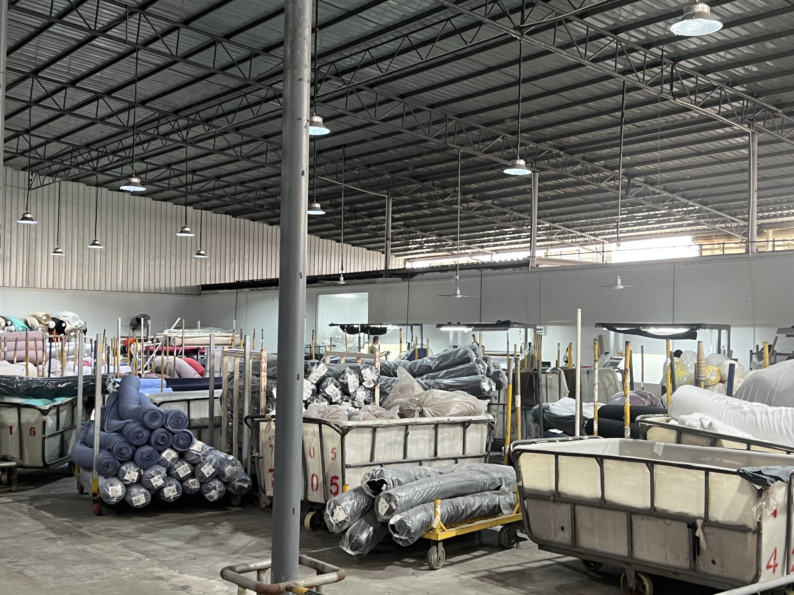
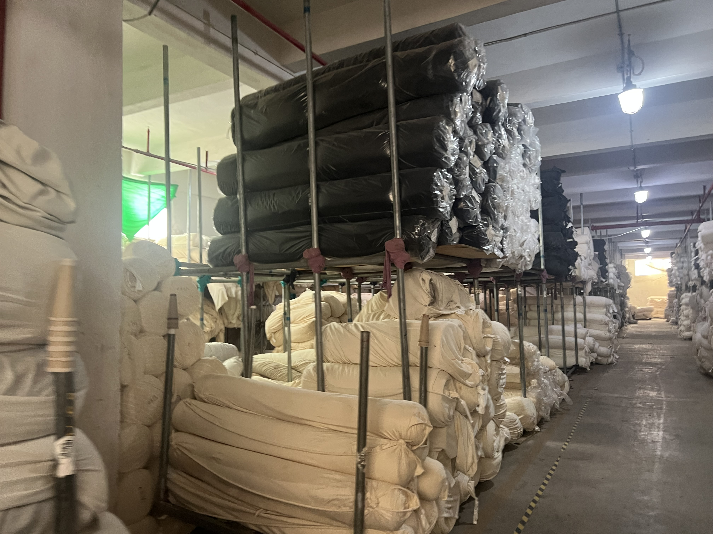

Taotao factory-visit photo, 25 August 2026. It shows the factory floor; it is not evidence about any specific buyer order.
I’m Katherine, from Taotao Trading in Zhaoqing.
I used to work in bank corporate credit risk. I checked loan files and covenants. Now I check certificates, samples, fabric, and the factory itself. The method is the same. Only the paper changed.
How it started
An overseas buyer found me online. He did not start with price. He asked me to visit a factory for him, and sent a detailed checklist of what to check.
He wanted a long-term partner, not just the lowest price. That is also how I work. The cheapest quote is not always the cheapest order.
I visit factories often, and I know the ones I work with well. That is why I can walk in, talk to the management directly, and check the real work — not just the sample room.
At the fair, he asked if I had a booth
After the Canton Fair, he asked me:
“Did you have an Agency space at the Canton”
My answer was:
“No，I just ask my customers to come to the factories’ booths and then took them to the factories if they would like to”
“Factories I work with they like me having customers come ,and we’ve been honest and bond with each other”
“And also I don’t have to pay for the booths”
He replied:
“Makes sense”
I don’t have a booth, not because I can’t go to the fair. My work is not at the booth. A booth shows you a sample and a price. A factory shows you whether that sample can be made steadily, batch after batch, and whether the next batch will match.
It shows you who makes the fabric, who cuts, sews, finishes, checks, and packs — in-house, or outsourced, and to whom.
What you see at a booth is one garment. What you see with me at the factory is whether that garment can be made again and again.

Fabric warehouse aisle, same visit, 25 August 2026.
Samples don’t end at shipping
Samples are the same. I follow them until they arrive, and I check what comes back. A sample is not a formality. It is where the relationship starts.
If you want to source from South China
Send me three things first:
- What product do you need?
- How many samples, and how many for bulk?
- What is your target market?
With those three, I can go to the factory and check for you. Without them, I can only give you a number. And a number alone does not protect your order.
I’m not a factory. I’m not a shop selling one piece at a time. I have no booth. I take you to the factory. Sample first. Check before you order.
This is Katherine from Taotao Trading. See you tomorrow. Bye-bye.